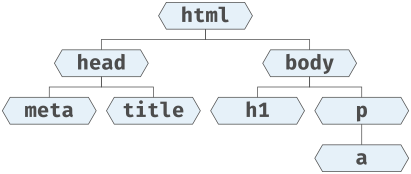
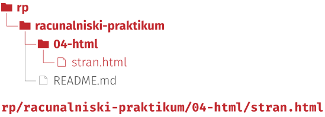

Označevalni jezik HTML#
Programska oprema
Visual Studio Code z razširitvijo HTMLHint: v pogledu razširitev (angl. Extensions) poiščite
HTMLHintin kliknite Install,spletni brskalnik, na primer Chrome, Firefox ali Safari.
V Wordu lahko naslov naredite tako, da besedilo povečate in odebelite. Na pogled je to naslov, za program pa samo večje krepko besedilo: ne pojavi se v samodejnem kazalu, bralnik zaslona ga ne prebere kot naslov, in če se odločite za drugačen videz naslovov, morate popraviti vsakega posebej. Word ima za to sloge, kot je Naslov 1 (angl. Heading 1), ki povedo, kaj besedilo je, in ne samo, kako je videti.
Na tej ideji je zgrajen HTML (angl. HyperText Markup Language, označevalni jezik za oblikovanje večpredstavnostnih dokumentov), v katerem so zapisane spletne strani.
Z značkami povemo, kaj posamezni deli besedila so, na primer naslov, odstavek, seznam, povezava, tabela ali slika; kako bodo videti, določi brskalnik ali pa to določimo posebej.
Markdown iz 1. poglavja dela enako, le da dele besedila označi s kratkimi znaki, HTML pa jih poimenuje: naslov prve ravni je h1 (angl. heading 1), zato kar v Markdownu zapišemo kot # Naslov, v HTML-ju zapišemo kot <h1>Naslov</h1>.
Struktura dokumenta#
Dokument HTML je sestavljen iz vsebine in značk (angl. tags).
Značke prepoznamo po oklepajih < in >, na primer <h1> ali <img>.
Večina značk ima dva dela: začetek <znacka> in konec </znacka>; kar je med njima, je vsebina značke.
Značke imajo lahko tudi atribute, ki jim dodajo podatke.
Primer je značka za povezavo a (angl. anchor): v atribut href napišemo spletni naslov, na katerega kaže povezava, vsebina značke pa je besedilo povezave, ki ga prikaže brskalnik.

Fig. 6 Sestavni deli značke HTML#
Nekatere značke nimajo vsebine, zato tudi ne konca, na primer <img> za sliko.
Značke lahko gnezdimo eno v drugo: <a href="https://www.fmf.uni-lj.si/"><em>FMF</em></a>.
Ne smejo pa se prekrivati: od dveh značk je bodisi ena v vsebini druge bodisi se sploh ne prekrivata.
Narobe je na primer <a href="https://www.fmf.uni-lj.si/"><em>FMF</a></em>.
Značke si lahko predstavljate kot škatle, ki držijo vsebino in druge škatle.
Brskalnik napačno gnezdenje večinoma preživi in stran vseeno prikaže, zato napake ne opazite, dokler kode ne preverite.
Imena značk lahko pišemo z velikimi ali malimi črkami.
Po dogovoru, ki se ga bomo držali tudi mi, jih pišemo z malimi.
Zaradi preglednosti vsako značko, ki jo začnemo v novi vrstici, zamaknemo glede na značko, v kateri je; urejevalnik to večinoma naredi sam.
Značke sredi besedila, kot je povezava a, ostanejo v vrstici z besedilom.
Komentarje, ki jih brskalnik ne prikaže, pišemo med <!-- in -->.
Enostaven primer dokumenta HTML#
<!DOCTYPE html>
<html lang="sl">
<head>
<meta charset="UTF-8">
<title>Enostavna spletna stran</title>
</head>
<body>
<!-- V naslednjih dveh vrsticah je vsebina (telo) spletne strani -->
<h1>Jaz sem naslov!</h1>
<p>V odstavkih imamo lahko tudi <a href="https://www.fmf.uni-lj.si/">povezave</a>.</p>
</body>
</html>
Dokument se začne z deklaracijo <!DOCTYPE html>, ki brskalniku pove, da gre za dokument HTML.
Deklaracija ni značka in nima konca; po dogovoru jo pišemo z velikimi črkami.
Sledi značka html, v kateri je ves dokument.
Njen atribut lang pove, v katerem jeziku je besedilo: sl za slovenščino, en za angleščino.
V znački html sta dve znački:
v glavi head so podatki o dokumentu, ki jih brskalnik ne prikaže na strani,
v telesu body pa vsebina strani.
V glavi so na primer
naslov dokumenta
title, ki ga brskalnik prikaže na zavihku,značka
<meta charset="UTF-8">, ki pove, v katerem kodiranju je zapisana datoteka. Brez nje brskalnik kodiranje ugane in šumnike lahko prikaže napačno, podobno kot pri podnapisih v 2. poglavju, le v obratni smeri: datoteko v UTF-8 prebere, kot da je v Windows-1252, inšprikaže kotÅ¡.
Dokument si lahko predstavljamo tudi kot hierarhijo značk:

Fig. 7 Hierarhija značk za zgornji primer dokumenta#
Vsebina dokumenta#
V telesu dokumenta najpogosteje uporabljamo naslednje značke:
naslove
h1doh6: številka pove raven naslova, ne njegove velikosti. Naslov strani jeh1, naslovi razdelkov soh2, naslovi podrazdelkovh3in tako naprej.odstavke
p(angl. paragraph),sezname: urejeni seznam
ol(angl. ordered list) in neurejeni seznamul(angl. unordered list), v katerih je vsak element v svoji značkili(angl. list item),citate
blockquote,povezave
az atributomhref,tabele
table, v katerih so vrsticetr(angl. table row), v vrsticah pa celicetd(angl. table data) ali celice glave tabeleth(angl. table header),slike
imgz atributomasrc, v katerem je pot do slike, inalt, v katerem je opis slike. Opis se uporabi, kadar se slika ne prikaže, in za dostopnost, na primer ko stran bere bralnik zaslona.
Brskalniku so presledki in prelomi vrstic v izvorni kodi vseeno: več zaporednih presledkov ali praznih vrstic prikaže kot en sam presledek.
Zato odstavkov ne ločimo s praznimi vrsticami, ampak vsakega označimo z značko p.
Povezava lahko kaže tudi na del iste strani.
Značka, na katero naj kaže, dobi atribut id, povezava pa ima v atributu href njegovo vrednost za znakom #.
Povezava <a href="#criticism">Criticism</a> tako pelje do naslova <h2 id="criticism">Criticism</h2>.
Vrednost atributa id se v dokumentu ne sme ponoviti.
Znački em (angl. emphasis) in strong povesta, da je besedilo poudarjeno, ne pa, kako je videti.
Z em označimo besedo, ki bi jo pri branju na glas poudarili, s strong pa pomembno besedilo, na primer opozorilo ali ključni pojem.
Brskalnik prvo običajno prikaže ležeče, drugo pa krepko.
Znački b (angl. bold) in i (angl. italic), ki povesta samo, kako naj bo besedilo videti, se ne uporabljata več.
Dobra praksa loči pomen, ki ga povedo značke HTML, od videza, ki ga določi CSS.
Matematika#
Formul, zapisanih v LaTeX-u, brskalnik sam ne zna prikazati.
Pomagamo si s knjižnico MathJax, ki jo v glavi dokumenta vključimo kot skripto:
brskalnik jo prenese skupaj s stranjo, ta pa poišče formule v sintaksi LaTeX-a in jih izriše.
Formule med \( in \) so prikazane v besedilu, formule med \[ in \] pa v svoji vrstici.
LaTeX boste podrobneje spoznali v naslednjem poglavju.
Vsebina in videz#
Kako so videti naslovi, odstavki in tabele, določa jezik CSS (angl. Cascading Style Sheets). HTML pove, kaj je kaj, CSS pa določi barve, pisave, razmike, velikosti in postavitev. Jezika sta primer ločevanja vsebine in predstavitve, istega načela kot pri slogih v Wordu.
Slogi so ponavadi v posebni datoteki s končnico .css, ki jo vključimo v glavi dokumenta:
<link rel="stylesheet" href="oblikovanje.css">
Atribut href je pot do datoteke, tako kot pri povezavah in slikah.
Datoteka s slogi je sestavljena iz pravil, kot je
h2 {
color: #8b4513;
}
To pravilo pove, da naj bodo vsi naslovi h2 rjavi.
Ker so naslovi označeni kot naslovi, z eno spremembo pravila spremenimo vse hkrati.
Besedila, ki je samo povečano in odebeljeno, pravilo za naslove ne zajame.
Datotek s slogi skoraj nihče ne piše od začetka: skoraj vsak vzame obstoječo in jo prilagodi, ko to potrebuje, na primer s pomočjo jezikovnega modela. To pa gre zlahka samo, če je HTML pravilno označen.
Orodja za razvijalce#
Spletni brskalniki imajo vgrajena orodja za razvijalce (angl. developer tools), s katerimi lahko pregledujete in urejate HTML in CSS strani, iščete napake v skriptah in spremljate, katere datoteke se prenesejo. Ko v brskalniku obiščete spletno stran, se na vaš računalnik prenese kopica datotek: dokument HTML, slogi, slike in skripte. Brskalnik jih uporabi, da vam prikaže stran. Orodja ne kažejo izvorne kode, ampak dokument, kot ga ima brskalnik v pomnilniku: če ga skripta spremeni, se sprememba vidi tam.
1. naloga: orodja za razvijalce#
Odprite brskalnik in v njem orodja za razvijalce:
Chrome: v meniju ⋮ na desnem koncu orodne vrstice izberite More tools > Developer Tools,
Firefox: v meniju ☰ na desnem koncu orodne vrstice izberite More tools > Web Developer Tools,
Safari: v meniju Develop izberite Show Web Inspector. Če menija Develop ne vidite, ga vklopite po navodilih.
Orodja odpre tudi tipka F12 (v Chromu in Firefoxu) ali bližnjica Ctrl+Shift+I (🍎 Cmd+Option+I).
V orodjih odprite zavihek Network.
V naslovno vrstico brskalnika vpišite
https://www.fmf.uni-lj.si/in stisnite vnašalko ↵. Poglejte, katere datoteke so se prenesle, da se je prikazala prva stran FMF: poleg dokumenta HTML še slogi, slike in skripte.Preklopite na zavihek z drevesom dokumenta (v Chromu in Safariju Elements, v Firefoxu Inspector) in si ga oglejte. To ni izvorna koda strani, ampak dokument, kot ga ima brskalnik v pomnilniku; razlika se bo pokazala v 4. nalogi.
2. naloga: ogrodje dokumenta#
V VSCode odprite imenik
racunalniski-praktikumv imenikurp(File > Open Folder). Če repozitorija na tem računalniku še nimate, ga pripravite po navodilih v 1. nalogi 3. poglavja ali prosite za pomoč. V njem naredite imenik04-html, v tem pa datotekostran.htmlin jo odprite.
Fig. 8 Repozitorij
racunalniski-praktikumpo tej točki#Odprite pogled Problems (View > Problems). Ko je kurzor v datoteki
stran.html, se v njem pojavi opozoriloDoctype must be declared first. Za sporočilom piše, katero pravilo je kršeno in v kateri vrstici in stolpcu je težava. Če se opozorilo ne pojavi, preverite, da je razširitev HTMLHint nameščena.V prvo vrstico napišite
<(morda tudi<!), počakajte, da se v priročnem meniju pokaže!DOCTYPE, in ga izberite z vnašalko ↵. V vrstici mora pisati<!DOCTYPE html>; če ne piše, deklaracijo prepišite od tu.V naslednjo vrstico napišite
<html>. Ko napišete>, vam urejevalnik sam dopiše konec značke, kurzor pa ostane med njima. Stisnite vnašalko.V značko
htmldodajte eno za drugo značkiheadinbody, zamaknjeni glede nahtml. V pogledu Problems se pojavi novo opozorilo. Odpravite ga, pa tudi tisto, ki se pojavi za njim; naslov dokumenta naj boISO 3103.V glavo, pred značko
title, dodajte še značko<meta charset="UTF-8">.Kodo preverite še na strani Nu Html Checker, ki je strožja od razširitve HTMLHint: prilepite jo v polje in kliknite Check. Dodajte atribut za jezik, ki ga predlaga; besedilo, ki ga boste dodali v 3. nalogi, je v angleščini.
Počistite vse napake in opozorila v pogledu Problems. Če ne veste kako, prosite za pomoč.
Zabeležite spremembo v pogledu za upravljanje različic:
V opravilnem stolpcu kliknite ikono za upravljanje različic (Source Control).
Pod napisom Changes je datoteka
stran.html. Ko se z miško zapeljete nad njeno vrstico, se na desni pokažejo ikone. Kliknite + (Stage Changes), ki izvede ukazgit add.Datoteka se premakne pod napis Staged Changes: v vnos gredo natanko spremembe pod tem napisom. V polje nad gumbom Commit napišite sporočilo, na primer
Pripravi ogrodje dokumenta HTML, in kliknite Commit.
Shranite vaje na GitHub
Na koncu 2. do 5. naloge zabeležite spremembe.
Če naloge na vajah ne končate, spremembe vseeno zabeležite in v sporočilo napišite na primer V delu: ... s kratkim opisom narejenega.
Preden nehate delati, na vajah ali doma, vnose pošljite na GitHub:
v paleti ukazov (Ctrl+Shift+P, 🍎 Cmd+Shift+P) izberite ukaz Git: Push.
3. naloga: vsebina#
Del domače naloge
Datoteki stran.html in tea-bowl.jpg, ki ju boste zabeležili na koncu te naloge, potrebujete za 4. domačo nalogo.
Pri pisanju značk vam bo v pomoč ukaz Wrap with Abbreviation iz palete ukazov, več o njem pa si preberite v plonkcu za paleto ukazov.
Če si ne predstavljate, kako se uporablja kakšna značka, zlasti pri seznamih in tabelah, poiščite zgled na spletu, denimo na strani W3Schools.
Datoteko
stran.htmlodprite še v brskalniku: v pogledu datotek jo kliknite z desno tipko, izberite Reveal in File Explorer (🍎 Reveal in Finder) in jo iz upravitelja datotek povlecite v okno brskalnika.Prenesite datoteko
vsebina.txt(ni je treba shraniti v repozitorij), jo odprite v VSCode in njeno vsebino prilepite v značkobody. Prilepljeno besedilo zamaknite glede nabody, tako da bo vsaka vrstica za dve ravni odmaknjena od roba: označite ga in stisnite Tab, ki vse označene vrstice zamakne za eno raven (Shift+Tab pa nazaj). Datotekostran.htmlshranite. Z bližnjico Alt+Tab (🍎 Cmd+Tab) skočite v brskalnik in stran osvežite z Ctrl+R (🍎 Cmd+R).Na začetku besedila, ki ste ga prilepili, označite naslov „ISO 3103“. Odprite paleto ukazov (Ctrl+Shift+P, 🍎 Cmd+Shift+P), začnite tipkati
wrapin ukaz Wrap with Abbreviation izberite z vnašalko, ko se pojavi na vrhu seznama. V pogovorno okno, ki se odpre, napišite ime značke za naslov strani (h1) in stisnite vnašalko. V vrstici mora zdaj pisati<h1>ISO 3103</h1>. Naslednjič se bo ukaz na vrhu seznama pojavil že po nekaj natipkanih znakih.Z ustreznimi značkami označite še naslove razdelkov (
h2): „Contents“ za uvodnimi odstavki ter „Details“, „Pot and bowl“, „Criticism“ in „Competing standards“. Zadnji štirje so v besedilu dvakrat: naslov razdelka je tisti, pred katerim sta dve prazni vrstici, ne vrstica v seznamu pod „Contents“. Namig: z Alt (🍎 Option) in levim klikom dodate kurzor, ukaz pa se izvede pri vseh kurzorjih hkrati.Pod naslovom „Contents“ so našteti razdelki. Iz njih naredite urejeni seznam. Postavite kurzor na začetek vsake vrstice (Ctrl+Alt+↑↓, 🍎 Cmd+Option+↑↓), pridržite tipko Shift in stisnite End (🍎 Cmd+→), da označite vsako vrstico s svojim kurzorjem. Uporabite ukaz Wrap with Abbreviation z značko
li: naredi toliko značk, kot imate kurzorjev. Nato vse vrstice označite z enim kurzorjem in jih obdajte z značkool.Pod naslovom „Details“ stavek „To maintain consistent results, …“ napoveduje seznam priporočil: vsi odstavki za njim naj bodo elementi neurejenega seznama (
ul). Kurzorje postavite s klikanjem, ker bi jih bližnjica iz prejšnjega koraka postavila tudi v prazne vrstice med odstavki. Dva elementa (tista s tabelama) sta zapisana v več vrsticah: vsakega posebej označite v celoti in ga šele nato obdajte z značko.Citat (odstavek pod besedilom „The abstract states the following:“) označite z značko
blockquote.Vse ostale odstavke označite z značko
p.V prvem odstavku naj bo „ISO 3103“ povezava na Wikipedijo: uporabite značko
a, spletni naslov s konca odstavka pa prestavite v njen atributhref.V 2. in 8. elementu seznama pod naslovom „Details“ sta tabeli s po tremi stolpci in tremi vrsticami. Zapišite ju z značkami
table,tr,tdinth; celice glave uporabite v prvi vrstici in v prvem stolpcu.Prenesite sliko, jo premaknite v imenik
04-htmlin jo pod naslovom „Details“ vstavite z značkoimgnamesto vrsticetea-bowl.jpg. V atributsrcnapišite pot do slike, v atributaltpa njen opis iz vrstice pod njo, ki jo nato izbrišite. V brskalniku preverite, da se slika prikaže. Verjetno je prevelika, zato jo za zdaj zakomentirajte: postavite kurzor v vrstico s sliko in v paleti ukazov izberite Add Line Comment.Počistite vse napake in opozorila, kodo pa preverite še z Nu Html Checker kot v 2. nalogi: opozori tudi, če je element seznama zunaj seznama ali tabela zunaj svojega elementa seznama, čeprav je stran v brskalniku videti v redu.
Zabeležite spremembo: dodajte datoteki
stran.htmlintea-bowl.jpgter napišite uporabno sporočilo, na primerDodaj vsebino dokumenta HTML.

4. naloga: matematika in sklicevanje#
V drugem odstavku poudarite besedilo „ISO 3103“ na začetku z značko
strong, besedilo „brewing tea“ pa z značkoem.Strani dodajte MathJax: sledite navodilom Getting Started za MathJax 4 in kodo, ki vključi skripto, dodajte v glavo dokumenta. Na konec telesa dokumenta dodajte formulo, na primer
\[x = \frac{-b \pm \sqrt{b^2-4ac}}{2a}\]. Za zdaj še ni treba, da razumete, kako formule delujejo.Orodja za razvijalce odprite v zavihku s stranjo
stran.html(odprta so za vsak zavihek posebej) in v zavihku Network poglejte, kaj se zgodi, ko osvežite stran: brskalnik prenese skripto MathJax in pisave. V zavihku Elements (Inspector) nato poiščite formulo: namesto besedila med\[in\], ki ste ga napisali, so v drevesu dokumenta značke, ki jih je vstavila skripta.Formula, ki ste jo napisali, je zapisana v posebni sintaksi, iz katere računalnik vsaj do neke mere razbere, kaj želimo. Poskusite ugotoviti, kako deluje: kje so ukazi, kje njihovi argumenti in kako so označeni?
Po zgledu zgornje formule, prav tako med
\[in\], napišite enačbo \(e^{i\pi} + 1 = 0\) (poskusite uganiti, kako se napiše črka \(\pi\)).Naslovom razdelkov dodajte atribute
id, elemente seznama pod naslovom „Contents“ pa spremenite v povezave nanje, tako da bo vsak vodil do svojega razdelka. Povezave preizkusite: ob kliku se spletnemu naslovu v naslovni vrstici doda#in ime razdelka, stran pa skoči nanj. Če je stran krajša od okna, okno zožite, da skok vidite.Zabeležite spremembo: dodajte datoteko
stran.htmlin napišite uporabno sporočilo, na primerDodaj formule in sklicevanje.
5. naloga: oblikovanje#
Prenesite datoteko
oblikovanje.cssin jo premaknite v imenik04-html.V glavo dokumenta
stran.htmldodajte značko<link rel="stylesheet" href="oblikovanje.css">in osvežite stran v brskalniku.Odkomentirajte sliko iz 3. naloge: postavite kurzor v vrstico s sliko in v paleti ukazov izberite Remove Line Comment. Slog omeji širino slik, zato slika ni več prevelika.
V datoteki
oblikovanje.csspoiščite pravilo za nasloveh2in barvo#8b4513zamenjajte s kakšno drugo, na primerdarkgreenali#336699. Datoteko shranite in osvežite stran: barvo je zamenjalo vseh pet naslovov razdelkov. Če se sprememba ne pokaže, stran osvežite brez predpomnilnika z Ctrl+Shift+R (🍎 Cmd+Shift+R, v Safariju Cmd+Option+R).Zabeležite spremembo: dodajte datoteki
stran.htmlinoblikovanje.css, napišite uporabno sporočilo, na primerDodaj slog, in vnose pošljite na GitHub.
Dodatni viri#
HTML elements reference, seznam vseh značk HTML na spletni strani MDN.
CSS styling basics, uvod v CSS na isti strani, če vas zanima več.